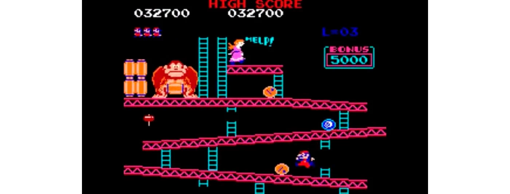

¿Quién no conoce Nintendo? Casi podría asegurar que alguien que diga no haber escuchado antes sobre Nintendo está mintiendo, pues esta empresa se ha encargado por décadas de posicionarse en el mercado y en el top of mind de las personas.
Pero por si no estabas enterado, Nintendo es una de las compañías mejor posicionadas en el mercado de las consolas y los videojuegos. Además de eso, son dueños de distintas empresas y franquicias alrededor del mundo y de diferentes sectores.
Es claro pensar que durante todo este tiempo y camino recorrido hay muchos detalles que probablemente no tenías idea sobre Nintendo, pero no te preocupes, en este blog te revelaremos muchos datos interesantes.
Podemos empezar esta serie de datos curiosos con lo más básico pero que seguramente miles de personas no lo saben aún. Al ser una empresa japonesa, el nombre de Nintendo está conformado por tres palabras en ese idioma que dan el significado de NIN – responsabilidad, TEN – cielo y DO – templo.
Super Nintendo es una consola verdaderamente antigua, sin embargo, su éxito no fue inmediato. En sus inicios, Nintendo experimentó con otros sectores, en un inicio se dedicaba a fabricar y vender juegos de cartas, ¡incluso llegó a tener su propia flotilla de taxis! Fue hasta años después que descubrieron su verdadero potencial que era la creación de consolas y videojuegos.
Este dato te podrá sorprender un poco, ya que todos imaginaríamos que el juego más vendido de Nintendo tendría que ser si o si, uno de Mario, pero en realidad no es así. El juego más vendido de esta gran compañía ha sido: Wii Sports.
The Legend of Zelda fue el primer juego en el cual podías guardar tu partida y continuar desde el punto en el que te quedaste, aspecto que fue muy innovador y revolucionario en aquella época.
La Wii ha sido la consola más vendida por esta empresa, destronando así a la Nintendo Entertainment System (NES), la cual fue la antecesora en tener el record mundial en ventas por consolas de videojuegos.
Por allá de los 90´s, esta gran empresa quiso experimentar y sobre todo innovar, sacando a la venta una especie de consola que buscaba acercarse a lo que ahora conocemos como gafas de realidad virtual. Nintendo buscaba idear un videojuego que te permitiera explorar las imágenes en 3D. Sin embargo, ni el juego en sí, ni el aparato eran los más adecuados, ya que la “consola portátil” terminó siendo demasiado grande, pesada y poco ergonómica.
Hasta el día de hoy, han salido al menos 30 películas basadas o relacionadas con los personajes de Nintendo. Supongo que alguna vez has visto por televisión al famosísimo Pokemón. La primera película que hizo la propia marca, fue Super Mario Bros, la cual tristemente fue un rotundo fracaso. Por otro lado, Pokemón ha sido el personaje y programa con más éxito.
Como seguramente todas las empresas, la gran Nintendo también fue demandada en diversas ocasiones, con la desventaja que su primer problema legal fue cuando apenas era una empresa pequeña. Resulta ser que como bien sabemos, Donkey Kong era una parodia caricaturesca del personaje King Kong, por lo que Universal City Studio presentó una demanda a Nintendo por los derechos de autor de dicho personaje. Después de la batalla legal, Universal no logró ganar el caso contra Nintendo y por lo contrario Universal fue acusado por actuar con alevosía y ventaja.
Muy probablemente este dato no lo sabías, y es que cómo es posible creer que una de las más fuertes competencias de Nintendo fue creación de la misma empresa. ¡Así como lo lees! Con el afán de mejorar sus propias consolas con mejores procesadores y tecnología de mayor calidad, Nintendo en colaboración con Sony desarrollaron PlayStation como avance tecnológico en el mundo de las consolas.
Jumpman, es el primer nombre que recibió el ahora tan conocido Mario. El anterior nombre se le asignó gracias a que fue el primer personaje en todos los videojuegos hasta esa época en poder saltar, y se desarrolló para salir en el videojuego de Donkey Kong. El nombre de Mario pertenecía al dueño del edificio en donde se encontraban trabajando los creadores de Nintendo en Washington.
Volver a Inicio